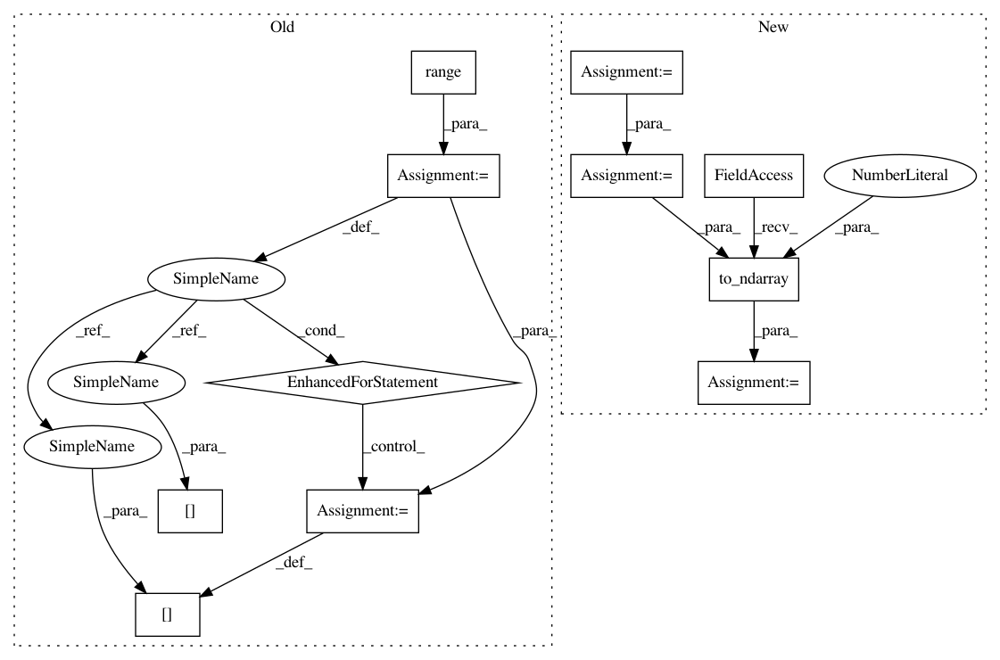

dc39188e6611f254dfb9ef0358570efe59704ff5,geomstats/spd_matrices_space.py,SPDMatricesSpace,sqrtm,#SPDMatricesSpace#Any#,152
Before Change
// vectors, diag, vectors)
sqrt_mat = np.zeros_like(sym_mat)
for i in range(sqrt_mat.shape[0]):
sqrt_mat[i] = scipy.linalg.sqrtm(sym_mat[i])
sqrt_mat = vectorization.to_ndarray(sqrt_mat, to_ndim=3)
return sqrt_mat
def random_uniform(self, n_samples=1):
After Change
[eigenvalues, vectors] = np.linalg.eigh(sym_mat)
sqrt_eigenvalues = np.sqrt(eigenvalues)
diag = np.diag(np.squeeze(sqrt_eigenvalues, axis=0))
diag = vectorization.to_ndarray(diag, to_ndim=3)
sqrt_mat = np.einsum("ijk,ikl,iml->ijm",
vectors, diag, vectors)
In pattern: SUPERPATTERN
Frequency: 3
Non-data size: 11
Instances
Project Name: geomstats/geomstats
Commit Name: dc39188e6611f254dfb9ef0358570efe59704ff5
Time: 2018-05-03
Author: ninamio78@gmail.com
File Name: geomstats/spd_matrices_space.py
Class Name: SPDMatricesSpace
Method Name: sqrtm
Project Name: geomstats/geomstats
Commit Name: dc39188e6611f254dfb9ef0358570efe59704ff5
Time: 2018-05-03
Author: ninamio78@gmail.com
File Name: geomstats/spd_matrices_space.py
Class Name: SPDMatricesSpace
Method Name: sqrtm
Project Name: geomstats/geomstats
Commit Name: 31d8076c8dd31c28054e820571ef38234950e101
Time: 2018-05-08
Author: ninamio78@gmail.com
File Name: geomstats/spd_matrices_space.py
Class Name:
Method Name: group_log
Project Name: geomstats/geomstats
Commit Name: ca7b264f69db393e3d1c704a20b4f22047d1998f
Time: 2018-05-08
Author: ninamio78@gmail.com
File Name: geomstats/spd_matrices_space.py
Class Name:
Method Name: group_exp